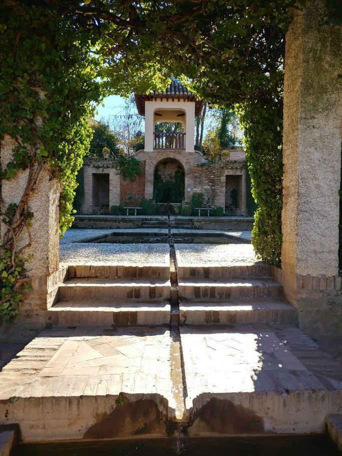
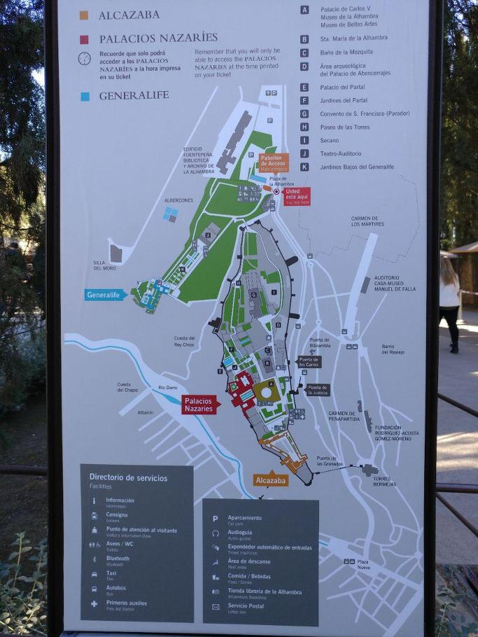
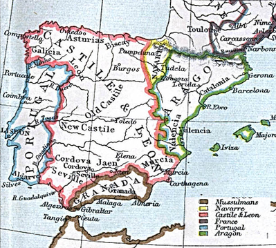
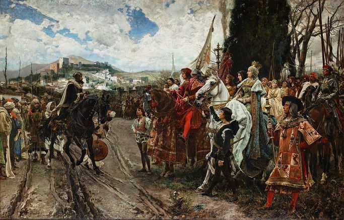
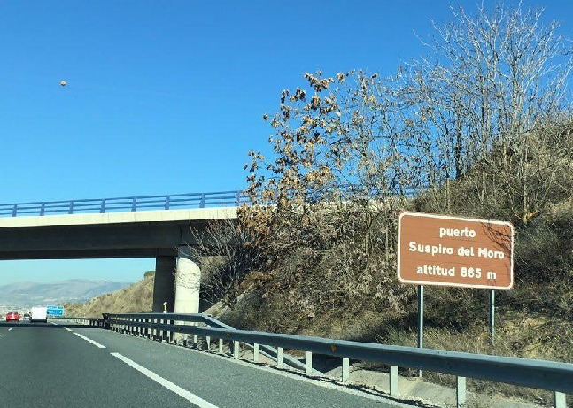
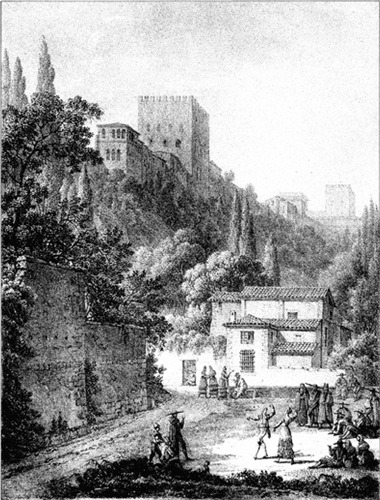
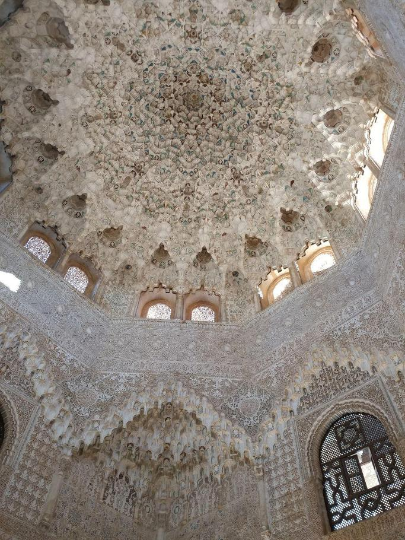
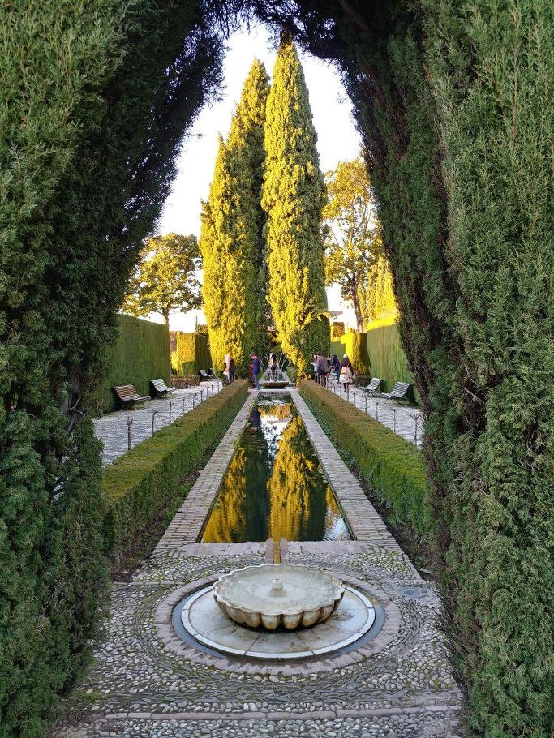
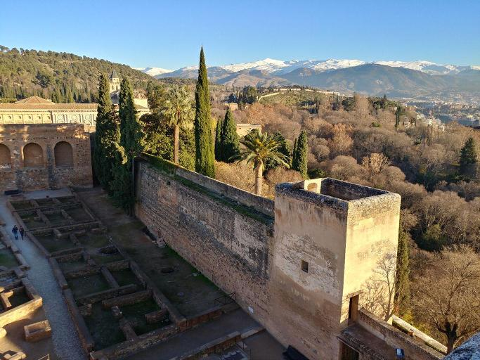
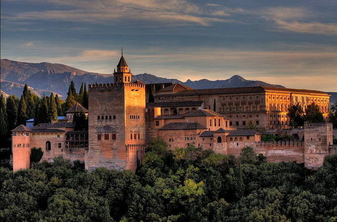

스페인 여행기 (3) - 알함브라에 얽힌 두가지 이야기
게시: 2017-01-08T21:15:43+09:00
이번 스페인 여행에서 가장 기대가 컸던 곳은 알함브라 궁전이었는데, 실제로 본 알함브라는 그 기대치를 100% 충족시켜주었습니다. 알함브라는 약 700년 간 이슬람의 통치를 받았던 스페인의 특색을 가장 잘 보여주는 곳인데, 그 이름은 아랍어인 알-함라(Al-Ḥamra), 영어로 직역하면 The Red 정도로 번역됩니다. 이 궁전은 그냥 연한 황갈색이고, 주변 토양이 붉기는 하지만 이름의 기원은 이 요새를 약 9세기 경 이 장소에 맨 처음 세운 아랍 족장의 별명이 알-함라였기 때문이라고 합니다. 알함브라는 10년 20년 사이에 지어진 하나의 건물이 아니고, 여러 채의 궁전과 요새, 정원이 수세기에 9세기부터 14세기에 이르기까지 오랜 세월에 걸쳐 지어진 건물 복합체입니다. 이 건물의 전체적인 구성과 아름다움에 대해서는 더 좋은 다른 글들이 많을 것이니, 여기서는 두어 가지 재미있는 역사적 사실에 대해서만 간단히 정리하고 넘어가겠습니다.

(아랍식 궁전에 분수와 오렌지 나무가 많은 것은, 이슬람 믿음에 '천국에는 샘과 미녀와 과실이 열리는 나무들이 있다'라는 말 때문에 그렇답니다. 정말 지상에 만들어 놓은 낙원이지요.)
아랍인들이 이베리아 반도 전역을 정복했다고 하지만, 그렇다고 이슬람 통치 기간인 8세기~15세기 동안 이베리아 반도를 아랍인들이 가득 채우고 있었던 것은 아니었습니다. 당연히 정복자는 소수였고, 피지배인인 기존 스페인 주민들은 여전히 그대로 살고 있었지요. 많은 스페인 사람들이 이슬람으로 개종하기도 했고, 또 그대로 기독교 신앙을 유지하기도 했습니다. 이슬람은 세금만 내면 정복민들이 무슨 종교를 가지든 용납해주는, 꽤 너그러운 종교 정책을 가지고 있었기 때문이었습니다. 오히려 이슬람 교인들에게 주어지는 면세 혜택을 줄이기 위해 개종 활동을 하지 않는 편이었습니다. 그로 인해 뜻 밖의 혜택을 받은 일파가 바로 유태인들이었습니다. 유태인들은 '예수님을 살해한 원수들'이라는 인식 때문에 기독교 근본주의를 신봉하던 유럽 사회에서 탄압과 박해의 대상이었는데, 이슬람이 장악한 스페인에서 그들은 나름대로 번영할 수 있었습니다. 그래서 세비야나 그라나다 등 이슬람 주요 거점 도시를 가면 꼭 유태인들이 모여 살던 거리가 있고, 세고비아 같은 도시는 유태인들 덕분에 흥하다가 기독교 세력이 다시 세고비아를 탈환한 뒤 유태인 사회가 붕괴되면서 도시 전체가 경제적 활력을 잃기도 했습니다.

(알함브라는 이렇게 정원, 요새, 아랍 궁전, 카톨릭 수도원, 그리고 르네상스식으로 새로 지어진 카를로스 5세 궁전 등이 어우러진 건물 복합체입니다. 그 중의 꽃은 물론 아랍식 궁전인 나스르 궁전입니다.)
정복자 아랍인들이 계속 본국인 북아프리카 모로코와 활발히 내왕했던 것도 아니었습니다. 원래 북아프리카에서 스페인으로 원정을 보냈던 아랍 왕조도 본국에서의 정변으로 교체되었고, 스페인의 이슬람 세력도 얼마가지 않아 독자적 왕국을 세우고 칼리프를 선언하면서 오히려 모로코 본국과는 경쟁 관계에 접어 들었습니다. 스페인의 코르도바 왕조의 왕족들도 자신들의 고향이 아라비아나 북아프리카라고는 생각하지 않았습니다. 그들은 수백년 간 스페인에 뿌리를 내렸으므로, 자신들의 고향을 스페인이라고 생각했습니다. 그 왕조에 충성하던 이슬람 교인들도 다 아랍 혈통은 아니었고, 그 중 상당수는 스페인 혈통의 이슬람인이었으며, 심지어 기독교인들도 있었습니다. 스페인의 이슬람 세력이 700년 넘게, 반올림해서 천년간 스페인을 지배하다보니 자연스럽게 이슬람 세력끼리의 전쟁도 많았고, 기독교와 이슬람 간의 전쟁도 많았으며, 이슬람과 기독교가 합세하여 다른 이슬람 또는 다른 기독교 세력과 싸우는 일도 많았습니다. 가령 스페인의 전설적 영웅 엘 시드(El Cid)도 레온-카스티야 왕국의 기독교 왕을 위해 싸우다가 정치적으로 불리해지자 사라고사의 이슬람 왕국으로 건너가 거기서 이슬람 뿐만 아니라 다른 기독교 세력과 싸우는 용병이 될 정도였지요.
기독교 세력이 진행한 스페인 재정복 전쟁, 즉 레콩키스타(Reconquista)는 이슬람 세력의 분열 덕분에 확실한 성과를 차곡차곡 쌓았고, 13세기가 되면 어느덧 남부 그라나다 왕국을 빼고는 이베리아 반도는 대부분 기독교 세력으로 넘어간 상태였습니다. 시간이 지나면 지날 수록 정복된 영토에서 차출할 수 있는 병력과 자원에서 차이가 날 수 밖에 없었으므로, 그라나다 왕국, 정확하게는 그라나다 토후국(Emirate of Granada)의 운명은 시간 문제였습니다.

(남쪽에 찌그러진 그라나다 왕국에게, 저렇게 커다란 키스티야-레온 왕국의 이사벨라 여왕과 아라곤 왕국의 페르난도 왕이 결혼하기로 했다는 소식은 그야말로 청천벽력이었을 것입니다.)
결국 1482년부터 10년 간 이어진 그라나다 전쟁의 결과, 이슬람 에미르(Emir)인 무함마드 12세(Muhammad XII)는 알함브라 궁전을 포함한 그라나다 왕국 전체를 이사벨라 1세와 페르난도 2세 부부에게 넘기고 항복해야 했습니다. 여기에 걸린 67개 항복 조건 중 주요 내용은, 이슬람 교인들은 계속 그 종교와 사유 재산을 유지할 수 있고, 기존의 법과 질서에 따른 보호를 받게 되며, 또 원할 경우 10%의 통행세를 내면 재산을 모두 가지고 북아프리카로 넘어갈 수 있다는 것이었습니다. 심지어 기독교인이다가 이슬람으로 개종한 사람도, 강요에 의해 다시 기독교로 개종하게 해서는 안 된다고도 명시되어 있습니다. 무함마드 12세 등 왕족들에게는 그라나다 바로 남쪽의 네바다 산맥 너머 지중해 인근 지역에 적절한 영지가 주어져 거기서 살게 되었지요.

(무함마드 12세가 이사벨라-페르난도 부부에게 항복하는 장면입니다. 배경에 알함브라 궁전이 보입니다.)
무함마드 12세는 최후까지 항전할 용기는 없었던 망한 나라의 군주로서 용기가 돋보이는 인물은 아니었습니다. 그러나 그의 어머니는 확실히 대단한 여장부였던 모양입니다. 원래 당시 항복할 때의 의례적 절차에 따르면, 패자는 승자의 손에 입을 맞추고 항복하는 도시의 열쇠를 바치게 되어 있었습니다. 그러나 무함마드 12세의 어머니가 '절대 그런 치욕만은 참을 수 없다'라고 강경하게 버틴 덕분에 무함마드 12세는 그냥 열쇠만 바치면 되었습니다. 이 사실은 당시 현장에 있었던 레온(Leon)의 주교가 기록으로 남겼기 때문에 역사적 진실로 내려옵니다. 또 당시 현장에는 인도로의 서쪽 항해 계획에 대해 승인을 받으려 이사벨라 여왕을 쫓아다니던 콜럼부스도 있었다고 합니다.
알함브라의 항복에 얽힌 이야기 그 다음은 전설입니다. 무함마드 12세가 그에게 배정된 영지로 식솔들과 함께 그라나다 남쪽으로 넘어가는 어느 고개 정상에 이르자, 무함마드 12세는 이제 이 고개를 넘으면 두번 다시 못 볼, 그 아름다운 알함브라 궁전의 모습을 마지막으로 한번 보기 위해 고개를 돌렸고, 그렇게 그의 눈에 들어온 궁전과 그라나다 시의 애틋한 모습에 그는 끝내 탄식을 뱉으며 눈물을 흘렸다고 합니다. 그러자 여장부이던 그의 어머니가, 요즘 같으면 남녀 성차별이라고 지탄받을 그런 말을 했다고 하네요.
"네가 남자답게 지키지 못한 것을 돌아다 보며 이젠 여자처럼 우는거냐 ?"
무함마드 12세가 이렇게 알함브라를 돌아본 고갯길은 Suspiro del Moro (무어인의 탄식)이라는 로맨틱한 이름이 붙였졌습니다. 이번에 알함브라에 갈 때, 일부러 남쪽에서 북쪽으로 넘어가며 그 곳을 찾아가 보았는데, 그냥 도로 위의 한 표지판만 있더군요. 차를 세울 수도 없었습니다. 고갯길에서 일부러 천천히 차를 몰며 바라다 보았지만 시야에 알함브라가 분명히 들어오지는 않았습니다. 아쉽더군요.

이 무함마드 12세는 한동안 네바다 산맥 남쪽에서 살다가, 결국 당시 모로코를 통치하던 마라니드 왕조에게 탄원한 뒤 모로코로 넘어가 지금도 관광도시로 유명한 페스(Fes)에서 살다 죽었다고 합니다. 약 100년 뒤, 그의 자손을 페스에서 만난 어떤 스페인 여행가는 그 자손들은 빈곤 속에 살고 있더라는 기록을 남겼습니다.
이런 쓸쓸한 전설 속에 탈환된 알함브라 궁전은 어떻게 되었을까요 ? 그라나다의 알함브라나 세비야의 알카사르 등 이슬람 궁전들을 접한 스페인 군주들은 이슬람 건축의 매력에 흠뻑 빠질 수 밖에 없었습니다. 그건 현대인들도 마찬가지이지요. 그들은 이슬람 양식으로 자신의 궁정을 장식하기를 원했고, 그렇게 발전된 이슬람 양식을 무데하르(Mudéjar) 양식이라고 합니다. 원래 무데하르는 아랍어로 '길들여진'이라는 뜻인데, 이슬람 축출 이후로도 스페인에 남아 이슬람 신앙을 유지한 사람들을 부르는 말이었습니다. 알함브라 궁전은 그 매력에 흠뻑 빠진 이사벨라 1세와 페르난도 2세의 궁전이 되었고, 그들은 아랍 양식을 살리면서도 일부 건물은 르네상스 양식으로 보수했습니다. 그래도 그들이 양식이 있는 사람들이었던 것이, 벽에 '알라 외에 승자는 없다' 등 근본주의 기독교인으로 볼 때 불온한 글귀가 벽면에 새겨진 방들도 많았는데 대부분 그대로 놓아두었다는 것입니다. 하긴 아랍어를 읽을 수 없었으니 상관없을 수도 있었겠네요. 콜럼버스가 마침내 신대륙으로의 항해를 승인 받은 것도 알함브라 궁전에서였습니다.
그러나 이런 무데하르 양식이 발전한 것은 대항해 시대로 스페인에 금은이 쏟아져 들어올 때의 이야기였습니다. 스페인의 국운이 점점 몰락하면서, 옛 이슬람 왕궁들은 점점 잊혀지기 시작했고, 알함브라도 예외는 아니었습니다. 알함브라는 폐허가 되어 그 아름다운 파티오(patio, 건물로 둘러싸인 안마당)들에는 온갖 쓰레기더미가 가득 쌓이게 되었고, 노숙자들의 쉼터가 되어 버렸습니다.

('알함브라의 벽 아래에서의 판당고' 라는 제목의 그림입니다. 작가는 나폴레옹 직속의 지도 제작가이자 화가인 바클레르-달브 Bacler d’Albe 입니다. 아마 달브가 이때는 세바스티아니의 사단에 배속되어 있었나 봅니다.)
그런 알함브라가 다시 빛을 본 것은 아이러니컬하게도 나폴레옹의 스페인 침공 덕분이었습니다. 1810년 1월 28일, 본격적으로 스페인을 침공하던 프랑스군 중 일부는 마침내 그라나다 시까지 몰아닥쳤고, 그라나다 시는 2년간 프랑스군 점령하에 있게 되었습니다. 이 프랑스군 부대를 지휘하던 것은 오라스 세바스티아니(Horace Sebastiani) 장군이었습니다. 이 양반은 원래 오스만 투르크에 외교관으로 파견되어 꽤 큰 역할을 했던 사람인데, 외교관으로서는 능력있는 사람이었을지 모르겠으나 군 지휘관으로서는 영 별로였습니다. 그런데 이렇게 군인이라기보다는 교양있는 외교관에 가까웠던 이 사람이 그라나다에 온 것이 알함브라에게는 행운이었습니다. 세바스티아니는 스페인 사람들에게 너그러운 점령군 지휘관이 아니었지만, 황폐화되어있던 알함브라의 아름다움과 가치를 대번에 알아보았습니다. 그는 알함브라를 프랑스군 사령부로 삼고 내부를 청소했으며, 알함브라의 일부인 알카사바(Alcazaba) 요새를 보수했습니다. 그렇다고 세바스티아니가 문화재를 보존하려는 문화 애호가만은 아니었습니다. 알함브라를 군사 요새화하기 위해 일부 건물을 부수고 개조하기도 했으니까요. 게다가 알함브라 내에 자리잡고 있던 산 프란시스코 수도원(convento de San Francisco)은 그 내부 장식물은 물론 청동으로 된 종들까지 모두 징발당하는 곤욕을 치렀습니다. 하지만 알함브라 내의 꽃이라고 할 수 있는 나스르 궁전(Palacios Nazaries)은 완전히 보수되어 말끔히 청소가 되어, 다시 그 분수에는 물이 흘렀고 정원에는 꽃이 심겨졌습니다. 알함브라 궁전이 근 200년 만에 다시 아름다움을 되찾는 순간이었습니다.


그러나 프랑스군이 알함브라에 좋은 일만 했던 것은 당연히 아닙니다. 1812년 9월, 전세 악화로 프랑스군이 그라나다에서 철수하게 되자, 이들은 방어 진지를 고스란히 스페인군에게 넘겨줄 수는 없다면서 알함브라의 일부 탑을 폭파한 것입니다. 바로 다음날 그라나다에 진입한 스페인군은 알함브라 궁전 내의 감옥에 갇혔던 스페인 포로들을 석방했고, 대신 포로로 잡은 프랑스군 병사들을 쳐넣었습니다. 이 스페인군의 지휘관인 바예스테로스(Francisco Ballesteros) 장군은 이 프랑스군 포로들에게 노역을 시켜 프랑스군이 폭파한 잔해를 치우게 했습니다. 이후 알함브라는 과거 스페인의 황금 시대를 상기시키는 역사적 현장으로 관심을 얻게 되었던 것입니다. 당연한 인과응보였는지 역사의 블랙 유머인지 모르겠으나, 징발당했던 산 프란시스코 수도원의 종들은 1818년 프랑스군으로부터 노획했던 24파운드짜리 대포를 녹여서 새로 주조되었다고 합니다.
위와 같은 이유 때문에, 스페인 사람들은 나폴레옹의 프랑스군이 알함브라를 훼손했다고 비난하지만, 19세기에 알함브라를 여행하며 그 존재와 아름다움을 세계에 알렸던 미국 작가 워싱턴 어빙(Washington Irving)은 프랑스군 덕분에 알함브라가 세상에 알려졌다고 썼던 것입니다.

(포도주의 탑 Torre del vino 꼭대기에서 바라본 네바다 산맥입니다. 알함브라 궁전은 건물 자체도 아름답지만 터도 아주 좋더군요. 부동산 중에서도 최상급입니다. 정말 아름다왔습니다.)

(이 사진은 제가 찍은 것은 아닙니다. 오른쪽의 창문이 많은 유럽식 건물은 후세에 지어진 카를로스 5세 궁전입니다. 나머지 왼쪽에서 중앙, 그리고 오른쪽으로 이어지는 긴 건물이 나스르 궁전입니다.)
Source : http://revistadehistoria.es/la-alhambra-tras-la-ocupacion-napoleonica
https://en.wikipedia.org/wiki/Muhammad_XII_of_Granada
https://en.wikipedia.org/wiki/Treaty_of_Granada_(1491)
https://en.wikipedia.org/wiki/Alhambra
https://en.wikipedia.org/wiki/Granada_War